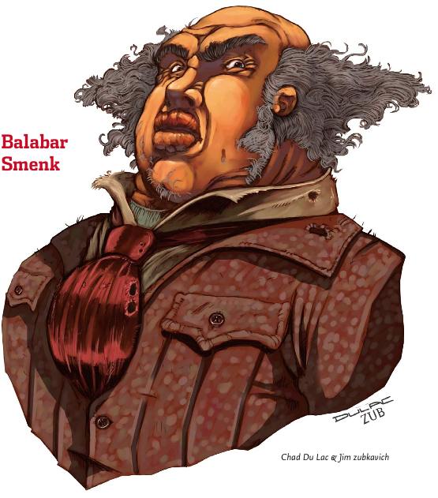
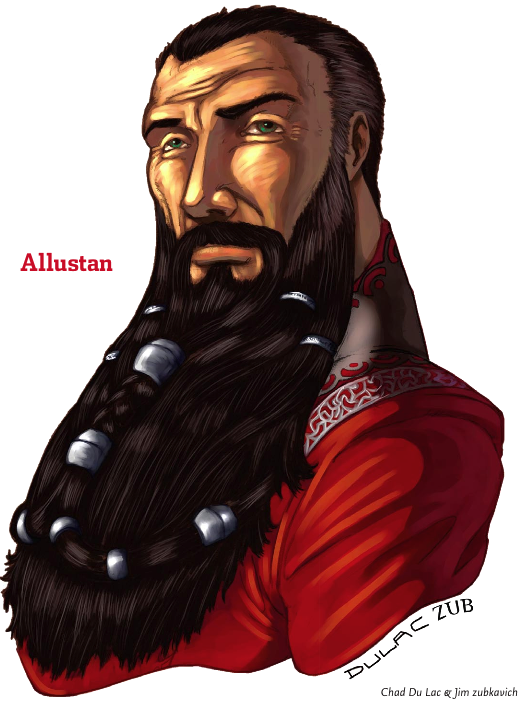

Week 1 - A Party Forms, and sets off - adventure for to find!
Well, we have begun our first game. Still need to get stats from everyone, and get that webapp going. I need a bigger, faster machine - developing on my 12" powermac (eclipse with all the trimmings, DNS, two glassfish domains, MySql) is like trying to do fancy cocktail mixing with treacle.
Our cast is:
- Arn the Dwarf. Outcast from his family. Working down 't mine for tuppence every other month. Boss is Balabar Smenk.
- Thomas the half-ogre. Had to leave home. Labouring in the ore refinery. Hard, honest work.
- Frith, the cleric. Layabout. Hangs out with druds and whatnot even though he isn't one personally.
- Flash (ah-ah!) the ... arcanist. Apprentice to Allustan the town sage ... or is he?
- Skulk, the skulk. Doing the usual - sneaking, filching, living hand-to-mouth and trying not to get caught in the open.
Anyway. Arn and Thomas were at the pub listening to some adventurers (Tirria, Auric, and Khellek) talk about how they planned to raid the Stirgenest Cairn! Woo hoo! Also present in the pub were Frith and Flash (ah-ah!), but not together. Flash decided to have a bit of fun with a Silent Image at the expense of the boastful big adventurer, but nothing much came of it.
{kind=link}
Bedazzled by tales of loot, Dwarf and Thomas decide to have a bit of an explore, well, Dwarf did and Thomas came along for the ride. Dwarf hopes to maybe find enough gold to leverage himself out of his crappy job down one of Smenk's mines. Frith the nature dude notes their keenness to have a go at Stirgnest Cairn, and decides to invite himself along as the undead-dealer-with guy. Unfortunately, he tries to explain this to Thomas, who has an Int of 6, because Dwarf is untypically quiet. After some misunderstandings concerning reanimated chickens, we all give up with the explanations and he just joins and the three head off to the town sage to find out where Stirgenest Cavern actually is.
Turns out the sage is not at home, but his apprentice Flash is. Flash is busy chopping wood, shoveling shit, and doing all the other little jobs that make being an apprentice such a joy. He informs the party that the Stirgenest cairn is entirely played out (to the point that local kids play hide-and-seek in it), but that there are dark tales about the Whispering Cairn. Strange disappearances and whatnot. Flash also joins the party and the four head off.
The party of four head out of town and decide, for no special reason, to make the old Abandoned Mine Office (linked below) into their cubbyhouse. In particular, the fact that this office is unused and the land it sits on unclaimed inflames Dwarf, who sees in it the opportinity to become a landowner (Gosh! A Landowner!) - anything being better than his current accomodations at Jalek's flophouse.
The office, however, is inhabited by a Skulk who unusually is of NG alignment. After a frankly unlikely exchange, the skulk also joins the party, and the five make for the Whisperinng Cairn.
As matters stand, the party stands at the entrance, looking into the dark opening and listening to the whispering sounds that - by some trick or artifice - sound almost like language. Will they all give up and go home? Will they continue on? Who knows? It ain't my job to decide - I'm just the DM. Stay tuned!
{kind=link}